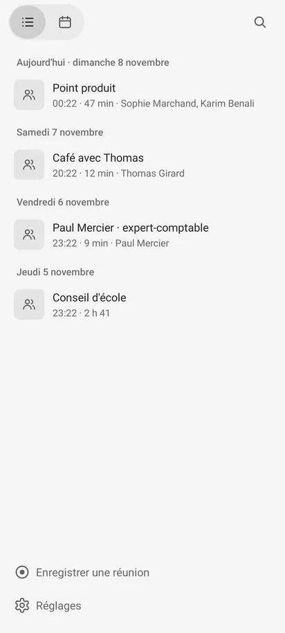
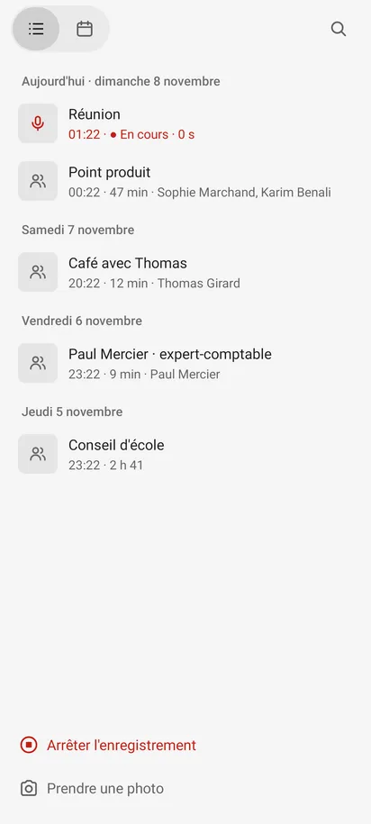
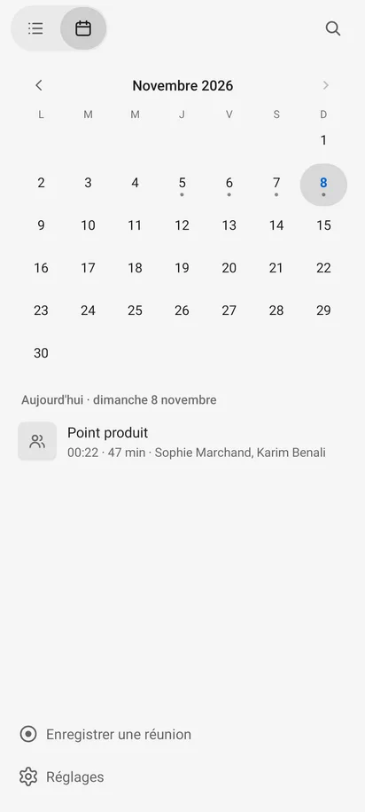
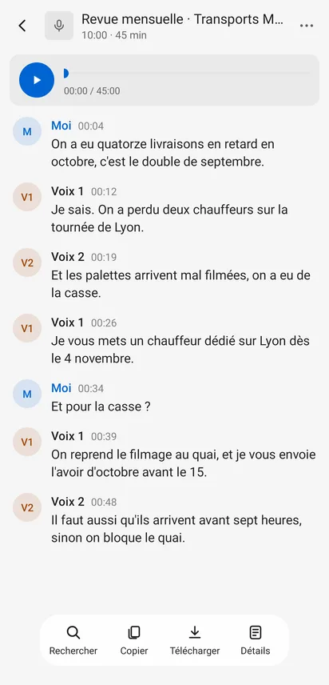
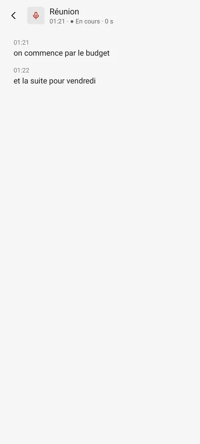
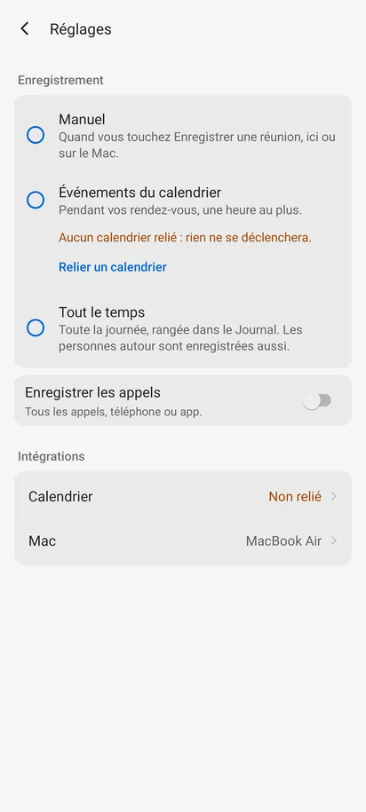

Tout ce que l'app dessine, tiré du code et du relevé de l'arbre des vues : écrans et états, composants, puis chaque valeur (taille, graisse, couleur, opacité, espacement, rayon, icône, texte), avec où elle sert et combien de fois. Les tableaux complets sont dans donnees/.
Le banc (Robolectric, API 35, 412 × 915 dp, xxhdpi) ouvre chaque état ; une copie du banc, hors du dépôt, l'a rejoué en 6 variantes : clair, sombre, 360 dp de large, 600 dp, et texte à 200 % (échelle non linéaire d'Android 14). Le relevé de chaque écran (place, taille et couleur de chaque vue, ce qu'elle dit à l'accessibilité) est dans donnees/ par les CSV mesures-*. Cliquer une vignette ouvre l'image.
| Écran | État | Comment | Variantes relevées | Images |
|---|---|---|---|---|
| Accueil | Liste par jour | Des conversations reçues du Mac | clair, sombre, 360, 600, 200 % | clair · sombre · 200 % · 360 dp |
| Accueil | Vide | Aucune conversation | clair, sombre, 360, 600, 200 % | clair · sombre |
| Accueil | En écoute (Journal en tête) | Mode « Tout le temps » | clair, sombre, 360, 600, 200 % | clair · sombre |
| Accueil | Enregistrement en cours | Une réunion enregistre | clair, sombre, 360, 600, 200 % | clair · sombre |
| Accueil | Calendrier | Bouton Calendrier | clair, sombre, 360, 600, 200 % | clair · sombre · 200 % · 360 dp |
| Accueil | Recherche | Rechercher, « lundi » | clair, sombre, 360, 600, 200 % | clair · sombre |
| Accueil | Icônes des sortes de conversation | WhatsApp, Signal, Telegram, Meet, mobile, réunion | clair, sombre, 360, 600, 200 % | clair · sombre |
| Accueil | Recherche : vignettes | Résultats avec leur icône | clair, sombre, 360, 600, 200 % | clair · sombre |
| Conversation | Lue, avec le son léger | Ouverte depuis la liste | clair, sombre, 360, 600, 200 % | clair · sombre |
| Conversation | Recherche ouverte | Barre du bas › Rechercher | clair, sombre, 360, 600, 200 % | clair · sombre · 200 % · 360 dp |
| Conversation | Réunion à plusieurs voix | Voix 1, Voix 2, Moi | clair, sombre, 360, 600, 200 % | clair · sombre · 200 % · 360 dp |
| Conversation | En direct, rien d'entendu | Pendant l'enregistrement | clair, sombre, 360, 600, 200 % | clair · sombre |
| Conversation | En direct, texte du téléphone | Transcription Google sur le téléphone | clair, sombre | clair · sombre |
| Conversation | Pas encore arrivée sur le Mac | Enregistrée, pas envoyée | clair, sombre, 360, 600, 200 % | clair · sombre |
| Conversation | Pas encore transcrite | Sur le Mac, sans texte | clair, sombre, 360, 600, 200 % | clair · sombre |
| Conversation | Aucune parole reconnue | Transcrite, vide | clair, sombre, 360, 600, 200 % | clair · sombre |
| Conversation | En-tête : icône d'app | Signal | clair, sombre, 360, 600, 200 % | clair · sombre |
| Conversation | En-tête sans texte du Mac | Telegram | clair, sombre, 360, 600, 200 % | clair · sombre |
| Journal | Sur le Mac (vide) | Ligne Journal | clair, sombre, 360, 600, 200 % | clair · sombre |
| Réglages | Événements du calendrier, aucun calendrier | Pied › Réglages | clair, sombre, 360, 600, 200 % | clair · sombre · 200 % · 360 dp |
| Mise en route | Aucun Mac relié | Premier lancement | clair, sombre, 360, 600, 200 % | clair · sombre · 200 % · 360 dp |
| Site | Accueil du site (Pixel 7) | Image du site | clair, sombre, 360, 600, 200 % | clair · sombre |
| Site | Notes vocales du site | Image du site | clair, sombre, 360, 600, 200 % | clair · sombre |
| Pastille | Pendant un enregistrement | Hors de l'app | clair | clair |






| Où | État | Source | Forme |
|---|---|---|---|
| Mise en route | Connexion à « Mac »… | SetupScreen.kt:59 | Titre seul, sans bouton |
| Mise en route | Même Wi-Fi que le Mac | SetupScreen.kt:60 | Titre + nom du Wi-Fi entre guillemets |
| Mise en route | Problème du lien | SetupScreen.kt:61 | Titre + texte de Link.problem |
| Mise en route | Lecteur de code absent | SetupScreen.kt:64 | Texte + Lecteur.CAMERA, sans bouton |
| Boîte | Enregistrer les appels (accessibilité) | SettingsScreen.kt:101 | Texte numéroté, 2 boutons |
| Boîte | Calendrier relié | SettingsScreen.kt:180 | Titre + une phrase, OK |
| Boîte | Mac (état du lien) | SettingsScreen.kt:196 | Titre = nom du Mac, OK, Scanner un code |
| Boîte | Détails d'une conversation | ConversationScreen.kt:396 | Lignes séparées par \n, OK |
| Boîte | Supprimer la conversation ? | ConversationScreen.kt:413 | Supprimer en LIVE, Annuler |
| Boîte | Lecteur de code indisponible | MainActivity.kt:202 | OK |
| Menu | ⋯ › Supprimer | ConversationScreen.kt:401 | PopupMenu d'Android |
| Toast | « Copié » (avant Android 13) | ConversationScreen.kt:372 | |
| Toast | « Dans Téléchargements › CallRecorder » | ConversationScreen.kt:386 | |
| Notification | Prêt (IMPORTANCE_MIN) | LinkService.kt:980 | Toujours là ; sans action |
| Notification | Écoute | LinkService.kt:981 | Action « Enregistrer une réunion » |
| Notification | Enregistre · Depuis HH:MM | LinkService.kt:982 | Barre indéterminée, action « Arrêter » (icône pause) |
| Notification | « Réunion » commence / L'écoute est arrêtée | LinkService.kt:87 | IMPORTANCE_HIGH ou DEFAULT |
| Notification | Réunion à risque | LinkService.kt:270 | Action « Ouvrir le réglage » |
| Notification | Enregistrement arrêté | LinkService.kt:1011 | Action « Reprendre » |
| Fenêtre | Point rouge des appels | CallService.kt:129 | 12 dp, #D32F2F, en haut à droite |
| Icône | Icône adaptative | res/mipmap-anydpi-v26/ic_launcher.xml | Fond blanc, micro 150/432 px |
| Icône | Petite icône des notifications | res/drawable/micro_notif.xml | Silhouette du micro |
24 états au banc, 22 lus dans le code : 46 états en tout.
L'app n'utilise ni Compose ni Material Components : des vues Android dessinées à la main (LinearLayout, TextView, GradientDrawable, RippleDrawable) sur le thème Theme.DeviceDefault.DayNight. Les pièces communes sont dans Screen.kt, les valeurs dans Look.kt.
| Composant | Source | Rôle | Valeurs |
|---|---|---|---|
label() | Screen.kt:37 | Tout texte de l'app | taille 16 par défaut, couleur look.text, medium si bold, une ligne + « … » si oneLine |
icon() | Screen.kt:45 | Icône décorative | 24 dp par défaut, teinte passée, cachée à l'accessibilité |
iconButton() | Screen.kt:59 | Icône qu'on touche | 48 × 48 dp, icône 22 dp, fond flat(24), contentDescription |
pressable() | Screen.kt:53 | Masse qui répond | Ripple ink 0,12 sur une masse |
flat() | Screen.kt:56 | Sans fond au repos | Ripple ink 0,12, masque de rayon 12 par défaut |
kindIcon() / kindTint() | Screen.kt:76 | Ce qu'était la conversation | 7 icônes ; 4 couleurs de marque, ink 0,55 sinon |
kindPlate() | Screen.kt:95 | Vignette 36 dp (en-tête) | masse 0,07, rayon size/5,5 (6,5 dp), icône 18 |
talkRow() | HomeScreen.kt:260 | Ligne de conversation | ≥ 64 dp, padding 8, vignette 44 (rayon 8, icône 20), titre 16, méta 14 |
Row.Day | HomeScreen.kt:240 | Titre de jour | 14 sp medium, title (0,56), padding 12/12/12/6 |
switcher | HomeScreen.kt:63 | Liste / Calendrier | capsule rayon 26, 2 boutons 52 × 48, choisi masse 0,12 |
field (accueil) | HomeScreen.kt:69 | Recherche de l'accueil | EditText 16 sp, sans fond, 42,7 dp de haut |
dayCell() | HomeScreen.kt:307 | Jour du calendrier | 48 dp de haut, 1/7 de la largeur ; choisi 0,12 ; aujourd'hui ACCENT gras ; point 4 dp |
footRow() | Screen.kt:123 | Ligne du pied | ≥ 48 dp, padding 8/12, icône 24, texte 16 |
bar() | Screen.kt:107 | Barre d'un écran | 64 dp fixes ; Retour 48 ; vignette 36 ; titre 17 ; détail 13 |
chevronRow() | Screen.kt:137 | Ligne des Réglages | ≥ 48 dp, padding 12/8, nom 16, valeur 15, chevron 16 dp |
playerCard | ConversationScreen.kt:99 | Lecteur du son léger | carte rayon 12, padding 12/10 ; Lire 44 dp ACCENT ; SeekBar 26 dp ; temps 12 sp |
find (conversation) | ConversationScreen.kt:62 | Rechercher dans la conversation | EditText 16 sp, masse rayon 12, padding 14/10, 41,7 dp de haut |
lineView() / fill() | ConversationScreen.kt:319 | Réplique | rond 36 (13 sp medium), nom 15 medium, heure 13 à 0,5, texte 16 × 1,15 |
toolbar / tool() | ConversationScreen.kt:128 | Barre flottante du bas | capsule rayon 24, elevation 6, outils ≥ 76 × 56, icône 22, mot 12 sp |
RadioButton des modes | SettingsScreen.kt:27 | Mode d'enregistrement | 16 sp + explication × 0,875 secondaire, padding 10/12/12/12 |
agendaMissing | SettingsScreen.kt:51 | Manque de calendrier | texte 14 WARNING + bouton texte ACCENT 14 medium |
calls (interrupteur) | SettingsScreen.kt:88 | Enregistrer les appels | carte 12, padding 12/8, Switch du système |
heading() | SettingsScreen.kt:121 | Titre de groupe | 14 sp medium, title, padding 4 |
scan (bouton plein) | SetupScreen.kt:18 | Scanner le code du Mac | capsule ACCENT, texte blanc 16 medium, icône 18 |
Pastille | Pastille.kt:36 | Pendant l'enregistrement | capsule rayon 24, floating, elevation 4, 2 × 48 dp |
Point rouge | CallService.kt:125 | Pendant un appel | 12 dp, #D32F2F, x 12, y 36 dp |
AlertDialog / PopupMenu / Toast / Switch | — | Composants du système | Theme.DeviceDefault.DayNight (AndroidManifest.xml:30) |
31 réglages de taille, 6 tailles différentes (12, 13, 14, 15, 16, 17) plus une taille relative (× 0,875, soit 14 sp sur 16). L'échelle de Material 3 en a 4 dans cette plage (12, 14, 16, 22 ; Typography.md). Quasi-doublons : 13 et 12 (heures, détail, temps du lecteur), 15 et 16 (nom de réplique, valeur des Réglages, états vides), 17 et 16 (titre de barre).
| Valeur | Fois | Rôles | Où (fichier:ligne) |
|---|---|---|---|
16 | 8 | couleur color · graisse non; couleur look.text (défaut) · graisse medium; couleur look.text (défaut) · graisse non; textSize direct | ConversationScreen.kt:64, ConversationScreen.kt:326, HomeScreen.kt:71, HomeScreen.kt:272, HomeScreen.kt:284, Screen.kt:133, SettingsScreen.kt:35, SetupScreen.kt:20 |
14 | 5 | couleur look.title · graisse medium; couleur metaColor · graisse non; couleur warningColor · graisse non; textSize direct | HomeScreen.kt:240, HomeScreen.kt:273, SettingsScreen.kt:55, SettingsScreen.kt:58, SettingsScreen.kt:121 |
15 | 5 | couleur if (today) LinkService.ACCENT else look.text · graisse non; couleur look.secondary · graisse non; couleur look.text (défaut) · graisse medium; couleur v | ConversationScreen.kt:61, ConversationScreen.kt:324, HomeScreen.kt:316, Screen.kt:147, SetupScreen.kt:17 |
13 | 4 | couleur look.ink(0.5) · graisse non; couleur look.secondary · graisse non; couleur look.text (défaut) · graisse medium | ConversationScreen.kt:57, ConversationScreen.kt:320, ConversationScreen.kt:325, SettingsScreen.kt:87 |
12 | 3 | couleur look.secondary · graisse non; couleur look.text (défaut) · graisse non; couleur look.title · graisse non | ConversationScreen.kt:98, ConversationScreen.kt:178, HomeScreen.kt:289 |
17 | 3 | couleur look.text (défaut) · graisse medium; couleur look.text (défaut) · graisse non | ConversationScreen.kt:56, SettingsScreen.kt:125, SetupScreen.kt:16 |
16 (défaut) | 2 | couleur look.text (défaut) · graisse non | Screen.kt:146, SettingsScreen.kt:110 |
×0.875 | 1 | RelativeSizeSpan | SettingsScreen.kt:32 |
Deux graisses : regular (400) partout, medium (500, sans-serif-medium) pour 10 rôles, et un gras (700) isolé pour le chiffre d'aujourd'hui dans le calendrier (Typeface.BOLD, HomeScreen.kt:316) : le seul 700 de l'app.
| Valeur | Fois | Rôles | Où (fichier:ligne) |
|---|---|---|---|
medium (500) | 10 | ConversationScreen.kt:320, ConversationScreen.kt:324, HomeScreen.kt:240, HomeScreen.kt:284, Screen.kt:35, Screen.kt:41, SettingsScreen.kt:59, SettingsScreen.kt:121, SetupScreen.kt:16, SetupScreen.kt:21 | |
BOLD | 1 | HomeScreen.kt:316 |
Interlignage par défaut de Roboto (environ 1,17) partout, sauf les répliques et la mise en route (× 1,15 en plus) et les modes des Réglages (+ 2 dp). Aucune hauteur de ligne fixe : à 200 %, les lignes grandissent mais les conteneurs de hauteur fixe (barre de 64 dp, ronds de 36 dp) non.
| Valeur | Fois | Rôles | Où (fichier:ligne) |
|---|---|---|---|
0f, 1.15f | 2 | ConversationScreen.kt:326, SetupScreen.kt:17 | |
dp(2 | 1 | SettingsScreen.kt:37 |
24 couleurs écrites en dur, dont 17 opaques : le texte et le fond (clair, sombre), 4 couleurs d'état × 2 modes, 4 couleurs de marque, l'accent, le verre, et un rouge isolé (#D32F2F, le point des appels). LinkService.ACCENT sert 14 fois hors de sa définition, dont 7 pour du texte ou un trait qui reste #0064D2 en sombre.
| Valeur | Fois | Rôles | Où (fichier:ligne) |
|---|---|---|---|
#FFFFFFFF | 3 | ConversationScreen.kt:274, SetupScreen.kt:24, SetupScreen.kt:31 | |
#00FFFFFF | 2 | masque binaire | ConversationScreen.kt:355, HomeScreen.kt:253 |
#1F000000 | 2 | ConversationScreen.kt:355, HomeScreen.kt:253 | |
Color.TRANSPARENT | 2 | MainActivity.kt:344, MainActivity.kt:345 | |
#F02C2C2E | 1 | Look.kt:25 | |
#F0FFFFFF | 1 | Look.kt:25 | |
#FF000000 | 1 | masque binaire | Screen.kt:56 |
#FF0064D2 | 1 | LinkService.kt:40 | |
#FF00897B | 1 | Screen.kt:90 | |
#FF147333 | 1 | Look.kt:49 | |
#FF1D1D1F | 1 | Look.kt:21 | |
#FF1E1E1E | 1 | Look.kt:20 | |
#FF25D366 | 1 | Screen.kt:87 | |
#FF26A5E4 | 1 | Screen.kt:89 | |
#FF32D74B | 1 | Look.kt:49 | |
#FF3B45FD | 1 | Screen.kt:88 | |
#FF409CFF | 1 | Look.kt:50 | |
#FFA0470A | 1 | Look.kt:51 | |
#FFC41E14 | 1 | Look.kt:52 | |
#FFD32F2F | 1 | CallService.kt:129 | |
#FFF5F5F5 | 1 | Look.kt:20 | |
#FFF5F5F7 | 1 | Look.kt:21 | |
#FFFF453A | 1 | Look.kt:52 | |
#FFFF9F0A | 1 | Look.kt:51 |
| Couleur A | Couleur B | ΔE | Lecture |
|---|---|---|---|
| #FFF5F5F5 | #FFF5F5F7 | 1,0 | Fond clair et texte sombre : sans conséquence |
| #FF1D1D1F | #FF1E1E1E | 1,5 | Texte clair et fond sombre : sans conséquence |
| #F0FFFFFF | #FFF5F5F5 | 3,5 | |
| #FFF5F5F5 | #FFFFFFFF | 3,5 | |
| #F0FFFFFF | #FFF5F5F7 | 3,6 | |
| #FFF5F5F7 | #FFFFFFFF | 3,6 | |
| #F02C2C2E | #FF1E1E1E | 6,9 | |
| #F02C2C2E | #FF1D1D1F | 7,2 | |
| #FFC41E14 | #FFD32F2F | 9,5 | Deux rouges d'enregistrement : LIVE et le point des appels |
Les gris sont des opacités du texte, comme sur le Mac. Relevé : 0,05 (carte), 0,07 (bouton, vignette), 0,12 (toucher, choisi, piste), 0,122 (0x1F, fond des ronds et du Journal), 0,4 (chevron, outils inactifs), 0,45 (neutre, points), 0,5 (heures), 0,55 (icône neutre), 0,56 (titre de groupe), 0,6 (secondaire), 0,62 (secondaire et titre en sombre). Quasi-doublons : 0,12 et 0,122 ; 0,55, 0,56, 0,6 et 0,62 ; 0,45 et 0,5. Sept nuances de gris de texte pour trois rôles (secondaire, titre, discret).
| Valeur | Fois | Rôles | Où (fichier:ligne) |
|---|---|---|---|
0.12 | 5 | ink(); mass() fond | ConversationScreen.kt:89, HomeScreen.kt:114, HomeScreen.kt:312, Screen.kt:53, Screen.kt:56 |
0.07 | 2 | mass() fond | HomeScreen.kt:267, Screen.kt:96 |
0.122 | 2 | alpha composé sur une couleur | ConversationScreen.kt:355, HomeScreen.kt:253 |
0.4 | 2 | View.alpha; ink() | ConversationScreen.kt:183, Screen.kt:148 |
0.45 | 2 | ink() | HomeScreen.kt:318, Look.kt:48 |
0.5 | 1 | ink() | ConversationScreen.kt:325 |
0.55 | 1 | ink() | Screen.kt:91 |
175 valeurs en dp, 21 différentes. L'échelle d'espacement du Mac (DESIGN.md) est 4, 6, 8, 10, 12, 16, 20, 24. Hors de cette échelle, en espacement : 2 (11 fois), 3, 14 (9 fois : padding des champs, marges de la mise en route). Les autres valeurs hors échelle sont des tailles d'objets (32, 36, 44, 48, 52, 56, 64, 76, 108).
Rayons : 8 (ligne, vignette), 12 (carte, défaut de flat), 18 (rond de 36), 20 (outil), 22 (Lire), 24 (capsule de 48), 26 (switcher), et size / 5,5 pour la vignette (8 à 44 dp, 6,5 à 36 dp). DESIGN.md annonce 12 / 8 / capsule.
| Valeur | Fois | Rôles | Où (fichier:ligne) |
|---|---|---|---|
24 | 7 | flat(); mass() | ConversationScreen.kt:130, HomeScreen.kt:114, HomeScreen.kt:114, HomeScreen.kt:312, HomeScreen.kt:312, Screen.kt:65, SetupScreen.kt:25 |
12 | 5 | mass() | ConversationScreen.kt:67, ConversationScreen.kt:102, SettingsScreen.kt:75, SettingsScreen.kt:93, SettingsScreen.kt:117 |
8 | 3 | flat(); mass() | HomeScreen.kt:267, Screen.kt:142, SettingsScreen.kt:65 |
12 (défaut flat) | 2 | flat() | HomeScreen.kt:265, Screen.kt:128 |
18 | 1 | mass() | ConversationScreen.kt:355 |
20 | 1 | flat() | ConversationScreen.kt:173 |
22 | 1 | mass() | ConversationScreen.kt:81 |
26 | 1 | mass() | HomeScreen.kt:64 |
dp(8).toFloat() | 1 | cornerRadius | HomeScreen.kt:252 |
dp(radius).toFloat() | 1 | cornerRadius | Look.kt:29 |
look.dp(24).toFloat() | 1 | cornerRadius | Pastille.kt:42 |
size / 5.5 | 1 | mass() | Screen.kt:96 |
Deux élévations pour le même rôle (ce qui flotte) : 6 dp pour la barre du bas, 4 dp pour la pastille.
| Valeur | Fois | Rôles | Où (fichier:ligne) |
|---|---|---|---|
dp(6).toFloat() | 1 | ConversationScreen.kt:131 | |
look.dp(4).toFloat() | 1 | Pastille.kt:43 |
28 icônes, 26 dessinées pour l'app (vectorielles, 24 dp) et 2 d'Android (android.R.drawable.ic_media_pause pour « Arrêter » dans la notification).
| Icône | Dessin | Fichier |
|---|---|---|
chevron | 16 dp, viewport 24, trait 2.4, remplissage #00000000, couleur trait #66000000, bouts round, angles round | res/drawable/chevron.xml |
ic_arreter | 24 dp, viewport 24, trait 1.8, remplissage #00000000/#FF000000, couleur trait #FF000000, bouts round, angles round | res/drawable/ic_arreter.xml |
ic_calendrier | 24 dp, viewport 24, trait 1.9, remplissage #00000000, couleur trait #FF000000, bouts round, angles round | res/drawable/ic_calendrier.xml |
ic_chercher | 24 dp, viewport 24, trait 2, remplissage #00000000, couleur trait #FF000000, bouts round, angles round | res/drawable/ic_chercher.xml |
ic_copier | 24 dp, viewport 24, trait 1.8, remplissage #00000000, couleur trait #FF000000, bouts round, angles round | res/drawable/ic_copier.xml |
ic_details | 24 dp, viewport 24, trait 1.8, remplissage #00000000, couleur trait #FF000000, bouts round, angles round | res/drawable/ic_details.xml |
ic_enregistrer | 24 dp, viewport 24, trait 1.8, remplissage #00000000/#FF000000, couleur trait #FF000000, bouts round, angles round | res/drawable/ic_enregistrer.xml |
ic_fermer | 24 dp, viewport 24, trait 2, remplissage #00000000, couleur trait #FF000000, bouts round, angles round | res/drawable/ic_fermer.xml |
ic_lire | 24 dp, viewport 24, trait —, remplissage #FF000000, couleur trait —, bouts butt (défaut), angles miter (défaut) | res/drawable/ic_lire.xml |
ic_liste | 24 dp, viewport 24, trait 1.9, remplissage #00000000/#FF000000, couleur trait #FF000000, bouts round, angles round | res/drawable/ic_liste.xml |
ic_meet | 24 dp, viewport 24, trait —, remplissage #FF000000, couleur trait —, bouts butt (défaut), angles miter (défaut) | res/drawable/ic_meet.xml |
ic_micro | 24 dp, viewport 24, trait 2, remplissage #00000000, couleur trait #FF000000, bouts round, angles round | res/drawable/ic_micro.xml |
ic_onde | 24 dp, viewport 24, trait 2, remplissage #00000000, couleur trait #FF000000, bouts round, angles round | res/drawable/ic_onde.xml |
ic_pause | 24 dp, viewport 24, trait —, remplissage #FF000000, couleur trait —, bouts butt (défaut), angles miter (défaut) | res/drawable/ic_pause.xml |
ic_photo | 24 dp, viewport 24, trait 1.8, remplissage #00000000, couleur trait #FF000000, bouts round, angles round | res/drawable/ic_photo.xml |
ic_plus | 24 dp, viewport 24, trait —, remplissage #FF000000, couleur trait —, bouts butt (défaut), angles miter (défaut) | res/drawable/ic_plus.xml |
ic_reglages | 24 dp, viewport 24, trait 1.8, remplissage #00000000, couleur trait #FF000000, bouts round, angles round | res/drawable/ic_reglages.xml |
ic_retour | 24 dp, viewport 24, trait 2, remplissage #00000000, couleur trait #FF000000, bouts round, angles round | res/drawable/ic_retour.xml |
ic_reunion | 24 dp, viewport 24, trait 2, remplissage #00000000, couleur trait #FF000000, bouts round, angles round | res/drawable/ic_reunion.xml |
ic_scanner | 24 dp, viewport 24, trait 2, remplissage #00000000, couleur trait #FF000000, bouts round, angles round | res/drawable/ic_scanner.xml |
ic_signal | 24 dp, viewport 24, trait —, remplissage #FF000000, couleur trait —, bouts butt (défaut), angles miter (défaut) | res/drawable/ic_signal.xml |
ic_telecharger | 24 dp, viewport 24, trait 1.8, remplissage #00000000, couleur trait #FF000000, bouts round, angles round | res/drawable/ic_telecharger.xml |
ic_telegram | 24 dp, viewport 24, trait —, remplissage #FF000000, couleur trait —, bouts butt (défaut), angles miter (défaut) | res/drawable/ic_telegram.xml |
ic_telephone | 24 dp, viewport 24, trait 2, remplissage #00000000, couleur trait #FF000000, bouts butt (défaut), angles round | res/drawable/ic_telephone.xml |
ic_whatsapp | 24 dp, viewport 24, trait —, remplissage #FF000000, couleur trait —, bouts butt (défaut), angles miter (défaut) | res/drawable/ic_whatsapp.xml |
micro_notif | 24 dp, viewport 24, trait 2, remplissage #00000000/#FFFFFFFF, couleur trait #FFFFFFFF, bouts round, angles miter (défaut) | res/drawable/micro_notif.xml |
Épaisseurs de trait relevées : 1.8 (7 icônes), 1.9 (2 icônes), 2 (9 icônes), 2.4 (1 icônes). Material Symbols n'a qu'un trait par graisse.
Chaque chaîne du code qui peut s'afficher (écrans, boîtes, notifications, raisons d'arrêt), relevée par motif puis filtrée à la main des chaînes techniques. Les contrôles typographiques sont dans la page Mesures.
| Texte | Où |
|---|---|
| Callrecorder enregistre votre voix | CallService.kt:130 |
| Journal | ConversationScreen.kt:56 |
| Rechercher dans la conversation | ConversationScreen.kt:63 |
| Position dans le son | ConversationScreen.kt:91 |
| Copier | ConversationScreen.kt:126 |
| Télécharger | ConversationScreen.kt:127 |
| Rechercher | ConversationScreen.kt:133 |
| Détails | ConversationScreen.kt:137 |
| Plus | ConversationScreen.kt:142 |
| Écoute depuis ${Dates.hour(since)} | ConversationScreen.kt:189 |
| votre Mac | ConversationScreen.kt:194 |
| Le Journal est sur $mac. | ConversationScreen.kt:195 |
| Pas encore transcrit. | ConversationScreen.kt:195 |
| ● En cours | ConversationScreen.kt:204 |
| Rien d'entendu pour l'instant. | ConversationScreen.kt:214 |
| téléphone ${Speech.changes} ${Voices.changes} | ConversationScreen.kt:233 |
| votre Mac | ConversationScreen.kt:239 |
| Pas encore arrivée sur $mac. | ConversationScreen.kt:241 |
| Aucune parole reconnue | ConversationScreen.kt:242 |
| Pas encore transcrite. | ConversationScreen.kt:243 |
| ${Dates.clock(p.currentPosition.toLong())} / ${Dates.clock(p.duration.toLong())} | ConversationScreen.kt:272 |
| Pause | ConversationScreen.kt:275 |
| Lire | ConversationScreen.kt:275 |
| [${it.t}] ${if (it.who.isEmpty()) | ConversationScreen.kt:365 |
| Copié | ConversationScreen.kt:372 |
| Dans Téléchargements › CallRecorder | ConversationScreen.kt:386 |
| votre Mac | ConversationScreen.kt:392 |
| ${i.voices} voix | ConversationScreen.kt:394 |
| Pas encore arrivée sur $mac | ConversationScreen.kt:395 |
| Sur $mac et sur ce téléphone | ConversationScreen.kt:395 |
| OK | ConversationScreen.kt:396 |
| Supprimer | ConversationScreen.kt:401 |
| votre Mac | ConversationScreen.kt:409 |
| Elle n'est pas encore arrivée sur $mac : elle sera perdue. | ConversationScreen.kt:410 |
| Elle est effacée de ce téléphone seulement. Elle reste sur $mac. | ConversationScreen.kt:411 |
| Supprimer la conversation ? | ConversationScreen.kt:413 |
| Supprimer | ConversationScreen.kt:415 |
| Annuler | ConversationScreen.kt:416 |
| ) - m.optLong( | Conversations.kt:134 |
| )) / 1000} s enregistrées, encodé en ${(System.currentTimeMillis() - begun) / 1000} s | Conversations.kt:134 |
| Liste | HomeScreen.kt:60 |
| Calendrier | HomeScreen.kt:61 |
| Rechercher | HomeScreen.kt:70 |
| Rechercher | HomeScreen.kt:76 |
| Fermer la recherche | HomeScreen.kt:124 |
| Rechercher | HomeScreen.kt:128 |
| ${Dates.hour(started)} · ● En cours · ${Dates.duration(seconds)} | HomeScreen.kt:217 |
| Arrêter l'enregistrement | HomeScreen.kt:231 |
| Prendre une photo | HomeScreen.kt:232 |
| Enregistrer une réunion | HomeScreen.kt:234 |
| Réglages | HomeScreen.kt:235 |
| Journal | HomeScreen.kt:241 |
| ● Écoute depuis ${Dates.hour(r.since)} | HomeScreen.kt:241 |
| ${i.voices} voix | HomeScreen.kt:258 |
| Mois précédent | HomeScreen.kt:283 |
| Mois suivant | HomeScreen.kt:285 |
| , des conversations | HomeScreen.kt:314 |
| AES | Link.kt:92 |
| ${stamp.format(java.util.Date())} $message\n | Link.kt:135 |
| plantage ou signal ${e.status} | Link.kt:174 |
| app figée | Link.kt:175 |
| mémoire du téléphone pleine | Link.kt:176 |
| trop de batterie ou de processeur consommés | Link.kt:177 |
| arrêt forcé (Réglages, ou adb) | Link.kt:178 |
| arrêté par la personne | Link.kt:179 |
| mise à jour | Link.kt:180 |
| autorisation changée | Link.kt:181 |
| gelée par Android | Link.kt:182 |
| raison ${e.reason} | Link.kt:183 |
| tout le temps | Link.kt:264 |
| événements du calendrier | Link.kt:264 |
| Réunions | LinkService.kt:78 |
| Écoute arrêtée | LinkService.kt:78 |
| « $meeting » commence | LinkService.kt:87 |
| L'écoute est arrêtée | LinkService.kt:87 |
| Touchez pour l'enregistrer. | LinkService.kt:88 |
| Touchez pour la reprendre. | LinkService.kt:88 |
| Callrecorder est restreint dans l'utilisation de la batterie. | LinkService.kt:119 |
| L'économie d'énergie est allumée. | LinkService.kt:120 |
| début | LinkService.kt:127 |
| « ${e.title} » ${Agenda.at(e.start)} risque de ne pas s'enregistrer | LinkService.kt:270 |
| Ouvrir le réglage | LinkService.kt:274 |
| réunion « $title » de l'agenda | LinkService.kt:297 |
| un appel | LinkService.kt:394 |
| la réunion du Mac, par le Bluetooth | LinkService.kt:443 |
| état | LinkService.kt:474 |
| la réunion du Mac | LinkService.kt:487 |
| Une réunion commence sur ${Link.linkedName(this) ?: | LinkService.kt:493 |
| Mac | LinkService.kt:619 |
| ${Build.MANUFACTURER} ${Build.MODEL} | LinkService.kt:632 |
| connexion fermée | LinkService.kt:647 |
| ${Link.linkedName(this) ?: | LinkService.kt:654 |
| } n'a pas confirmé son identité : rien ne lui est envoyé. Scannez le code du Mac pour refaire le lien. | LinkService.kt:654 |
| sur le Mac | LinkService.kt:692 |
| Mode essai. | LinkService.kt:978 |
| Prêt | LinkService.kt:980 |
| Écoute | LinkService.kt:981 |
| Enregistre | LinkService.kt:982 |
| Depuis ${java.text.DateFormat.getTimeInstance(java.text.DateFormat.SHORT).format(java.util.Date(cur.startedAt))} | LinkService.kt:982 |
| Reprendre | LinkService.kt:1015 |
| Enregistrement | LinkService.kt:1022 |
| Prêt | LinkService.kt:1024 |
| Arrêter | LinkService.kt:1046 |
| Enregistrer une réunion | LinkService.kt:1046 |
| Pas d'androidx : le retour passe encore par ici | MainActivity.kt:160 |
| Préparation du lecteur de code… | MainActivity.kt:182 |
| téléchargement du module : ${update.errorCode} | MainActivity.kt:189 |
| Lecteur de code indisponible | MainActivity.kt:202 |
| OK | MainActivity.kt:203 |
| Mac | MainActivity.kt:218 |
| CallRecorder_${System.currentTimeMillis()}.jpg | MainActivity.kt:309 |
| Pictures/CallRecorder | MainActivity.kt:311 |
| startActivityForResult suffit ici : pas d'androidx | MainActivity.kt:318 |
| Prendre une photo | Pastille.kt:44 |
| Arrêter l'enregistrement | Pastille.kt:45 |
| Pas commencé : il reste moins de 500 Mo | Recordings.kt:137 |
| micro indisponible | Recordings.kt:270 |
| Arrêté : il reste moins de 500 Mo | Recordings.kt:314 |
| micro perdu ($n) | Recordings.kt:325 |
| $channels canaux, un seul son | Recordings.kt:339 |
| Arrêté au bout d'une ${if (Testing.on) | Recordings.kt:383 |
| Le micro ne répond plus : l'enregistrement s'est arrêté. | Recordings.kt:396 |
| L'enregistrement s'est arrêté. | Recordings.kt:396 |
| Ce qui précède est gardé. | Recordings.kt:397 |
| Scannez le code avec l'appareil photo du téléphone, puis touchez Ouvrir Callrecorder. | Repli.kt:15 |
| Retour | Screen.kt:111 |
| $name, $value | Screen.kt:144 |
| $seconds s | Screen.kt:160 |
| ${seconds / 60} min | Screen.kt:161 |
| ${seconds / 3600} h ${ | Screen.kt:162 |
| .format(seconds / 60 % 60)} | Screen.kt:162 |
| EEEE d MMMM | Screen.kt:176 |
| Aujourd'hui · $text | Screen.kt:177 |
| demain ${hour(t)} | Screen.kt:187 |
| , fr).format(Date(t))} ${hour(t)} | Screen.kt:188 |
| Manuel | SettingsScreen.kt:24 |
| Quand vous touchez Enregistrer une réunion, ici ou sur le Mac. | SettingsScreen.kt:24 |
| Événements du calendrier | SettingsScreen.kt:25 |
| Pendant vos rendez-vous, une heure au plus. | SettingsScreen.kt:25 |
| Tout le temps | SettingsScreen.kt:26 |
| Toute la journée, rangée dans le Journal. Les personnes autour sont enregistrées aussi. | SettingsScreen.kt:26 |
| Aucun calendrier relié : rien ne se déclenchera. | SettingsScreen.kt:55 |
| Relier un calendrier | SettingsScreen.kt:57 |
| Enregistrer les appels | SettingsScreen.kt:95 |
| 1. Touchez CallRecorder dans la liste.\n2. Allumez-le.\n\nSi c'est grisé : ouvrez les infos de l'app, touchez ⋮, puis Autoriser les paramètres restreints. | SettingsScreen.kt:101 |
| Ouvrir l'accessibilité | SettingsScreen.kt:102 |
| Ouvrir les infos de l'app | SettingsScreen.kt:103 |
| Enregistrer les appels | SettingsScreen.kt:110 |
| Réglages | SettingsScreen.kt:125 |
| Enregistrement | SettingsScreen.kt:130 |
| Intégrations | SettingsScreen.kt:134 |
| Mac | SettingsScreen.kt:161 |
| Ce téléphone | SettingsScreen.kt:163 |
| Allumé | SettingsScreen.kt:171 |
| Éteint | SettingsScreen.kt:171 |
| Tous les appels, téléphone ou app. | SettingsScreen.kt:172 |
| Pas en Manuel. | SettingsScreen.kt:172 |
| Calendrier | SettingsScreen.kt:174 |
| Non relié | SettingsScreen.kt:174 |
| Mac | SettingsScreen.kt:175 |
| Calendrier | SettingsScreen.kt:180 |
| Le calendrier relié à $mac. | SettingsScreen.kt:181 |
| Le calendrier de ce téléphone. Les titres et les heures restent ici. | SettingsScreen.kt:181 |
| OK | SettingsScreen.kt:182 |
| Connecté. | SettingsScreen.kt:189 |
| Connectez ce téléphone au même Wi-Fi que $mac. | SettingsScreen.kt:190 |
| Pas joignable pour l'instant : ce que vous enregistrez reste sur ce téléphone. | SettingsScreen.kt:191 |
| \n\nUn enregistrement attend de partir. | SettingsScreen.kt:193 |
| \n\n$waiting enregistrements attendent de partir. | SettingsScreen.kt:193 |
| OK | SettingsScreen.kt:196 |
| Scanner un code | SettingsScreen.kt:197 |
| par adb | SetupReceiver.kt:27 |
| Mac | SetupReceiver.kt:38 |
| Scanner le code du Mac | SetupScreen.kt:19 |
| votre Mac | SetupScreen.kt:55 |
| Connexion à $mac… | SetupScreen.kt:59 |
| Connectez ce téléphone au même Wi-Fi que $mac | SetupScreen.kt:60 |
| « $wifi » | SetupScreen.kt:60 |
| Aucun Mac relié | SetupScreen.kt:61 |
| Connexion à $mac… | SetupScreen.kt:63 |
| Aucun Mac relié | SetupScreen.kt:64 |
| Sur le Mac : Réglages › Paramètres › Téléphones › Ajouter un téléphone. | SetupScreen.kt:64 |
| délai dépassé | Speech.kt:245 |
| rien reconnu | Speech.kt:333 |
| pas de parole | Speech.kt:334 |
| langue pas encore sur le téléphone | Speech.kt:335 |
| langue non prise en charge | Speech.kt:336 |
| reconnaissance occupée | Speech.kt:337 |
| autorisation manquante | Speech.kt:338 |
| erreur de l'app | Speech.kt:339 |
| son illisible | Speech.kt:340 |
| erreur $e | Speech.kt:341 |
| Moi | Voices.kt:221 |
| Voix ${voices.size + 1} | Voices.kt:224 |
| Moi | Voices.kt:277 |